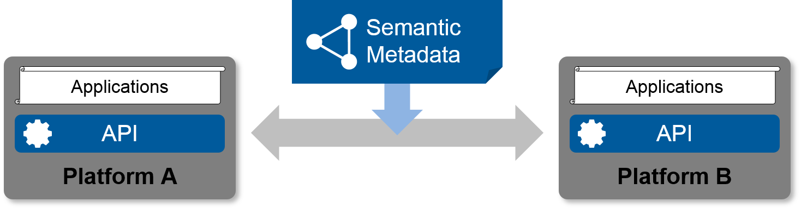
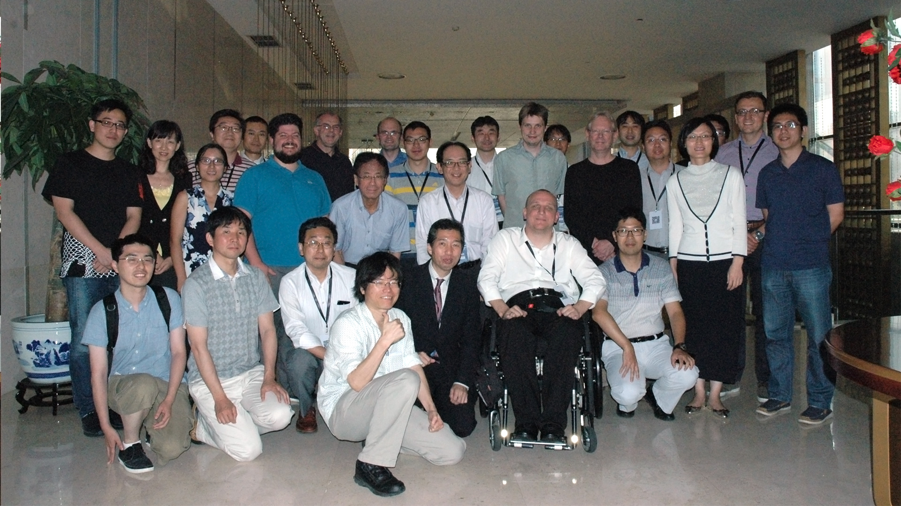

White Paper for the Web of Things
Comments are welcome on the Web of Things Interest Group public email list
The Web of Things seeks to counter the fragmentation of the IoT by using and extending existing, standardized Web technologies (e.g., metadata and APIs) in order to enable easy integration across IoT platforms and application domains. Extending existing Web standards will reduce costs for developing and deploying IoT services through the global reach of these standards, enable open markets of services, and unleash the power of the network effect.

Metadata enables different IoT platforms to interoperate and form part of the Web of Things
Introduction
There is broad agreement about the huge potential for services for the Internet of Things (IoT), however, this potential is being held back by fragmentation with a lack of interoperability across platforms, a bewildering variety of standards and a rapid evolution of the low-level IoT technologies themselves. The Web of Things proposes to counter this fragmentation through metadata that enables easy integration across IoT platforms, and which simplifies application development through a common interaction model that is independent of the underlying protocols. This is expected to drive down the costs and risks involved in developing services, and help realize the full potential for the IoT. In short, we seek to extend the Web from a Web of pages to a Web of Things. There are many possible applications across a wide range of domains, e.g., homes, offices, healthcare, cities, electrical grids, retail and manufacturing.
The starting point is the idea of Things that stand for physical or virtual entities, whether connected or not. These are exposed to applications as software objects with APIs corresponding to the Thing's properties, actions and events. These software objects can represent local resources, e.g., sensors and actuators attached to the device running an application script, or remote Things, where the object acts as a proxy for resources on another device.
The approach is based upon the fundamentals of Web architecture:
- URIs for identifying Things and their descriptions
- A variety of protocols for accessing Things, since no one protocol will be appropriate in all contexts
- Metadata for describing Things as a basis for interoperability and discovery, and playing an analogous role to HTML for Web pages
URIs can be used to access machine-interpretable descriptions of Things. These descriptions enable the automatic generation of scriptable objects, whose interaction capabilities correspond to those of the Thing the object stands for. The application logic using the software objects can be hosted on the same device as the Thing, or on other devices such as a local hub or a cloud platform. Application developers are shielded from the implementation details of how objects are coupled to Things, allowing platform developers to choose the transport protocols and communication patterns best suited to the context.
Applications can discover Thing descriptions in a variety of ways. Nearby Things, e.g. using Bluetooth beacons, Things on the same local area network, and Things listed in a repository, e.g. a hub or cloud-based service. Metadata enables searching for Things based upon their descriptions and relationships. Devices may expose their metadata directly, or it could be held separately. This allows the Web of Things to support existing IoT devices, including those too constrained to handle the metadata themselves. This is illustrated in the following diagram:
{kind=link}
The following table shows how the abstraction layer for Things fits into the communications stack.
| Application Developer (WoT focus) | Application | Programs that either implement a Thing's behavior, or which interact with a Thing, e.g. exposing or utilizing APIs for control of sensors and actuators, and access to associated metadata |
|---|---|---|
| Things | Software objects that expose the compound state of devices or digital services; data and interaction model, metadata, semantic annotation, Thing Description | |
| Platform Developer (IoT focus) | Transfer | Addressing of elements and message exchange patterns such as push, pull, pub/sub, peer to peer, buffering, multiplexing, support for devices which spend much of their time sleeping; and bindings to communication protocols such as HTTP, CoAP, MQTT, WebSockets, Bluetooth GATT, and many others |
| Transport | Addressing of application endpoints and transmission of messages; UDP, TCP as well as non-IP based transports | |
| Network | Addressing of network nodes and routing of packets across interconnected networks; IP (including profiles such as 6LoWPAN or Thread) |
Web of Things in the W3C

W3C held a workshop on the Web of Things in mid 2014 to bring people together to discuss the potential and timeliness for starting work. The Web of Things Interest Group was launched at the start of 2015 and has focused on gathering use cases and requirements, a technology landscape survey, architectural patterns, and experimental verification of the proposed building blocks through a series of PlugFests (see Section 2).
W3C is now proposing to launch a Web of Things Working Group to standardize those aspects that the Interest Group believes are mature enough to progress to W3C Recommendations. This Working Group will focus on the metadata vocabularies that are useful across a broad range of application domains. In addition, we plan work on scripting APIs exposed to application developers, and bindings to common platforms and protocols in collaboration with the standards development organizations responsible for these.
Security and privacy is a major concern for the IoT. The Web of Things needs to enable end-to-end security across IoT platforms. This will require standards for security metadata as a basis for one platform to identify how to securely interoperate with another. The Working Group will also address application focusing APIs for cross-platform security frameworks.
The Web of Things Interest Group will play a complementary role to the Working Group. While the Working Group is tasked to write standards-track specifications and test suites, the Interest Group will organize and run PlugFests to evaluate the current working assumptions, reach out and collaborate with interested organizations, vendors, and communities, and explore new areas to identify work that is ready for transfer to the W3C Recommendation Track (i.e., any W3C Working Group).
The Web of Things Working Group Charter deliberately excludes standardization of domain-specific metadata vocabularies. There are already many industry specific organizations who could help with this. In addition, there is a growing realization of the need for agile processes for working with metadata vocabularies at an early stage of maturity. This would encourage sharing, early feedback and dissemination of best practices. Further work is needed to build a shared understanding across IoT industry alliances and standards development organizations, as we seek collaboratively to unlock the massive potential of the IoT.

Web of Things Interest Group, Beijing, 2016
Incubation of Technical Proposals
The Web of Things Interest Group has played in important role for the incubation of the technical proposals. Along with surveying the landscape and collecting use cases, the IG gained practical experiences through a succession of so-called PlugFests held as part of the Interest Group's regular face-to-face meetings. The finding have been collected in the Current Practices document, which is continuously updated to link the conceptional work to running implementations of the Web of Things building blocks.
Web of Things PlugFest, Beijing, 2016
- a WoT app running in the browser to interact with Things using UI elements generated from the Thing Description.
- a smartphone offering WoT-based access to off-the-shelf Bluetooth devices.
- a portable script migrated to a local industrial controller to control an air conditioner in Japan.
- mashing up Things across multiple protocol bindings including HTTP, CoAP, BACnet, and Lemonbeat.
By now, several companies and institutes such as Fraunhofer, Fujitsu, Panasonic, RWE, Samsung SmartThings, and Siemens have implemented the currently proposed building blocks in different prototypes. These range from embedded sensor nodes over home appliances to industrial controllers, smartphones, and Web apps. Software implementations exist in company closed source as well as open-source projects such as ThingWeb or the IoTivity WoT Servient. Furthermore, a number of WoT-related open source projects announced their interest in the ongoing work.
Summary
W3C is seeking to accelerate the growth of the IoT through Web technology standards that complement existing standards, simplify application development, and enable interoperation across platforms. The Web of Things Interest Group, which was launched in early 2015, is continuing work on identifying and maturing building blocks, and preparing the ground for transfer to the W3C Recommendation Track. This has resulted in a draft charter for a proposed Web of Things Working Group to standardize cross domain metadata vocabularies and APIs. Further charter proposals are anticipated as the Interest Group continues its work, e.g. on areas such as semantic interoperability, security, and privacy, as the technical work reaches an appropriate level of maturity. We invite interested parties to join the W3C and participate in realizing the huge potential of the IoT.